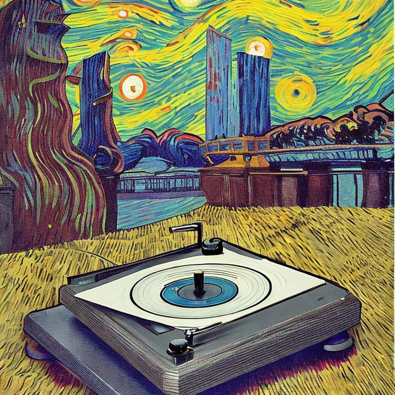
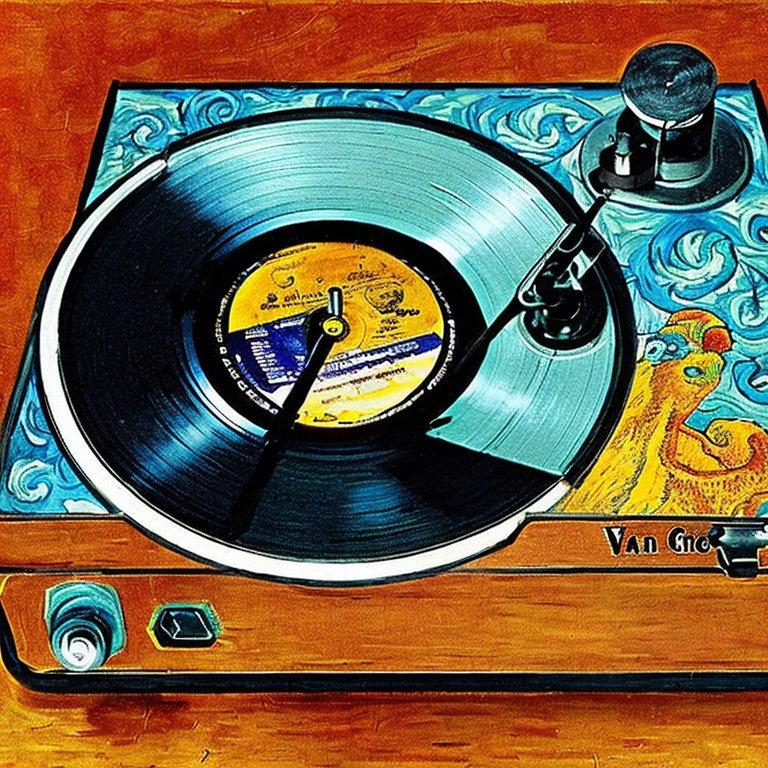
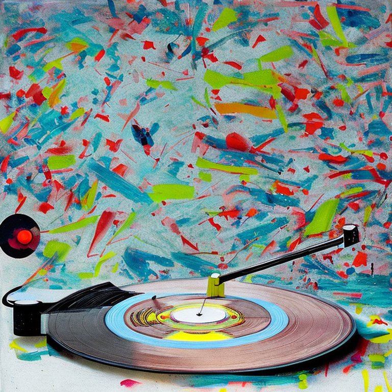
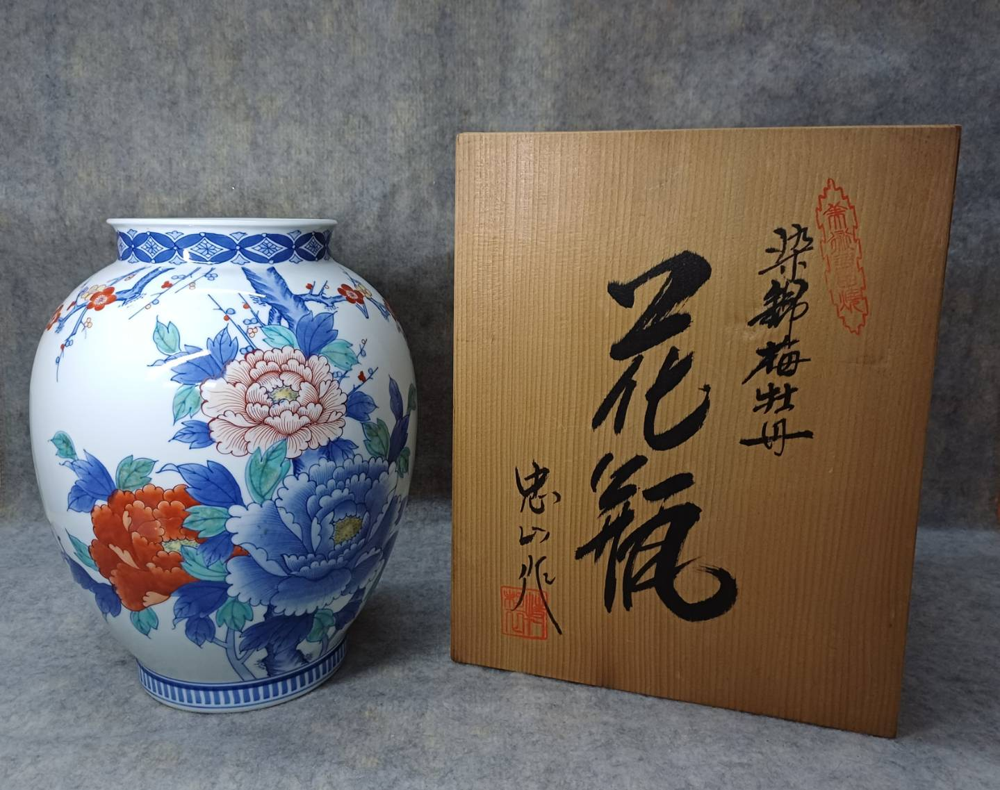
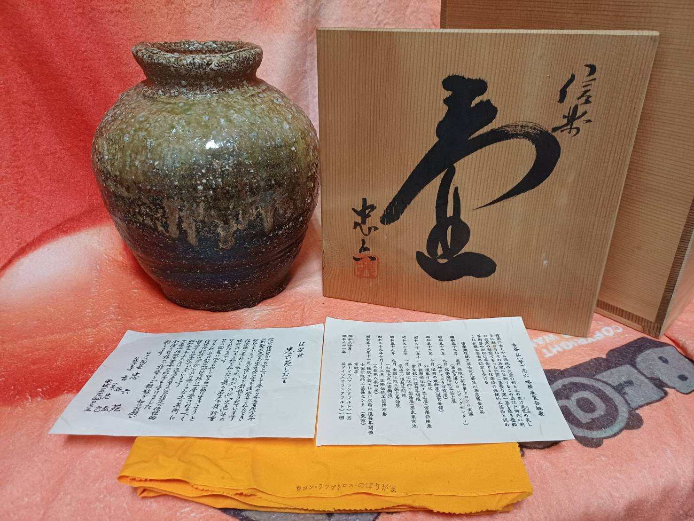

每一件古物，都是一段凝固的時光。
丹波的土、備前的火、有田的彩、樂燒的掌溫——日本匠人將一生的修為揉進泥土與釉色之間，燒製出超越時代的器物之美。一只茶盌上細密的開片，記錄著數十年歲月的呼吸；一把酒壺的雀嘴弧度，藏著職人對「用之美」的執念。
「時光大盜殿堂」專注展示日本早期的古玩物件。從宮內廳御用深川製蓋杯，到浪華錫半的手工御盃；從名窯樂燒七世和樂的茶盌，到信樂古谷弘的質樸壺器——每一件所附的原裝共箱共布，讓穿越時空的想像更加完整。
這些器物曾經展示了日本家庭的茶室文化，映照著昔時主人靜心獨處的片刻；或現身於酒宴之間，盛滿友人推杯換盞的歡笑。如今它們漂洋過海，等待懂得的人，將這份跨越時空的美，重新安放在生活之中。
穿越時空的地圖，從這裡展開。
精 選 古 物







